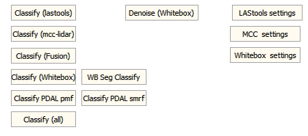

 LIDAR Point cloud form option,
Class tab
LIDAR Point cloud form option,
Class tab
- Classify options
- Denoise options
- Program settings which control how the other programs operate
From the "CLASS" tab on LIDAR Point clouds control form. You must have installed the selected program in the location where MICRODEM expects it.
This should be a last resort, based on my experience with this.
| Program and setup diretions | Module | Parameters | Notes |
| Whitebox | whitebox_tools.exe -r=LidarGroundPointFilter |
|
|
| whitebox_tools.exe -r=LidarSegmentationBasedFilter |
|
||
| PDAL | translate pmf |
Very slow | |
| translate smrf |
Uses point data type 3, which is very verbose | ||
| LAStools | lasground lasheight lasclassify |
|
Classify (LAStools). Note this has license restrictions. |
| mcc-lidar |
|
Last update 2013 | |
| Fusion | groundfilter | Approximately 7 | Last update 2020 (or maybe not much since 2006) |
|
 |
|
Last revised 6/21/2020